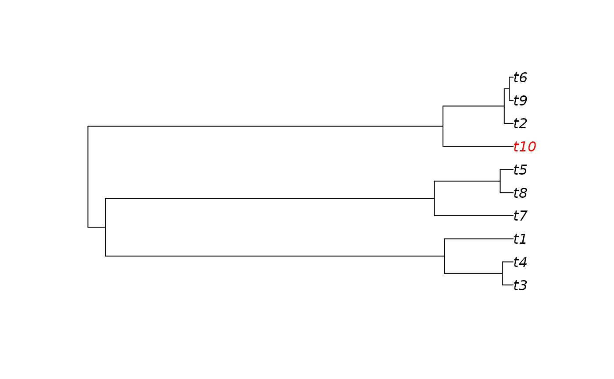

Simulating DAMOCLES
DAMOCLES_sim.RdSimulates DAMOCLES
Usage
DAMOCLES_sim(
phy,
gamma_0,
gamma_td,
mu,
sigma,
psiBranch,
psiTrait,
z,
phi,
traitOpt,
br0,
br_td,
nTdim,
root.state,
root.trait.state,
plotit = FALSE,
keepExtinct = FALSE
)Arguments
- phy
phylogeny in phylo format
- gamma_0
initial per lineage rate of immigration (gamma)
- gamma_td
time dependency in gamma
- mu
per lineage rate of local extinction
- sigma
probability of local (i.e. in-situ) speciation
- psiBranch
phylogenetic distance at which gamma is half gamma_0
- psiTrait
trait distance at which gamma is half gamma_0
- z
shape of increase in gamma with increasing trait or phylogenetic distance
- phi
rate of decline in gamma with distance from trait optima
- traitOpt
trait value at which gamma = gamma_0
- br0
Brownian rate parameter
- br_td
rate of temporal decline in Brownian rate parameter
- nTdim
number of independent trait dimensions
- root.state
geographic state of ancestor i.e. present (1) or absent(0)
- root.trait.state
trait value of ancestor
- plotit
whether to plot the phylogeny and timing of immigration/local extinction events
- keepExtinct
whether to retain data for extinct lineages
Value
A list of two tables. The first table contains the following columns: The first column contains the vector of tip labels in the phylogeny The last column contains the presence (1) or absence (0) of the species The second table has dimensions d x N where d is the number of trait dimensions and N is the number of species. It contains the trait values.
References
Pigot, A.L. & R.S. Etienne (2015). A new dynamic null model for phylogenetic community structure. Ecology Letters 18: 153-163.
Examples
#create random phylogeny
library(ape)
phy = ape::rcoal(10)
#run DAMOCLES
out = DAMOCLES_sim(
phy,
gamma_0 = 1.5,
gamma_td =0,
mu = 0,
sigma = 0,
psiBranch = 0,
psiTrait = 0,
z = 10,
phi = 0,
traitOpt = 1,
br0 = 0.1,
br_td = -0.1,
nTdim = 2,
root.state = 1,
root.trait.state = 0,
plotit = FALSE,
keepExtinct = FALSE
)
#the output consists of a list
patable = out[[1]] # the first element is the presence absence table
traits = out[[2]] # this is a matrix of traits values
#show presence/absence on the tree
patable$col = rep("black",dim(patable)[1])
patable$col[which(patable$state == 1)] = "red"
plot(phy,tip.col = patable$col)
